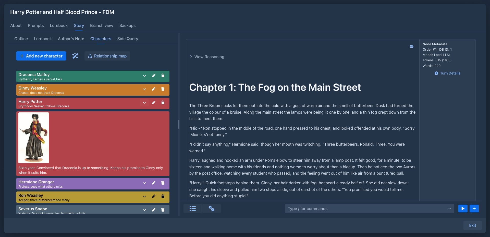
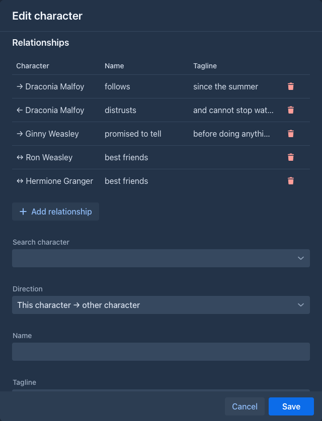
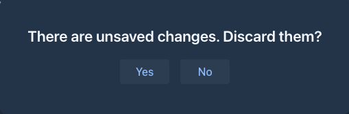
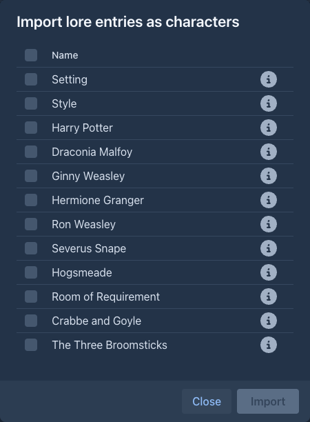
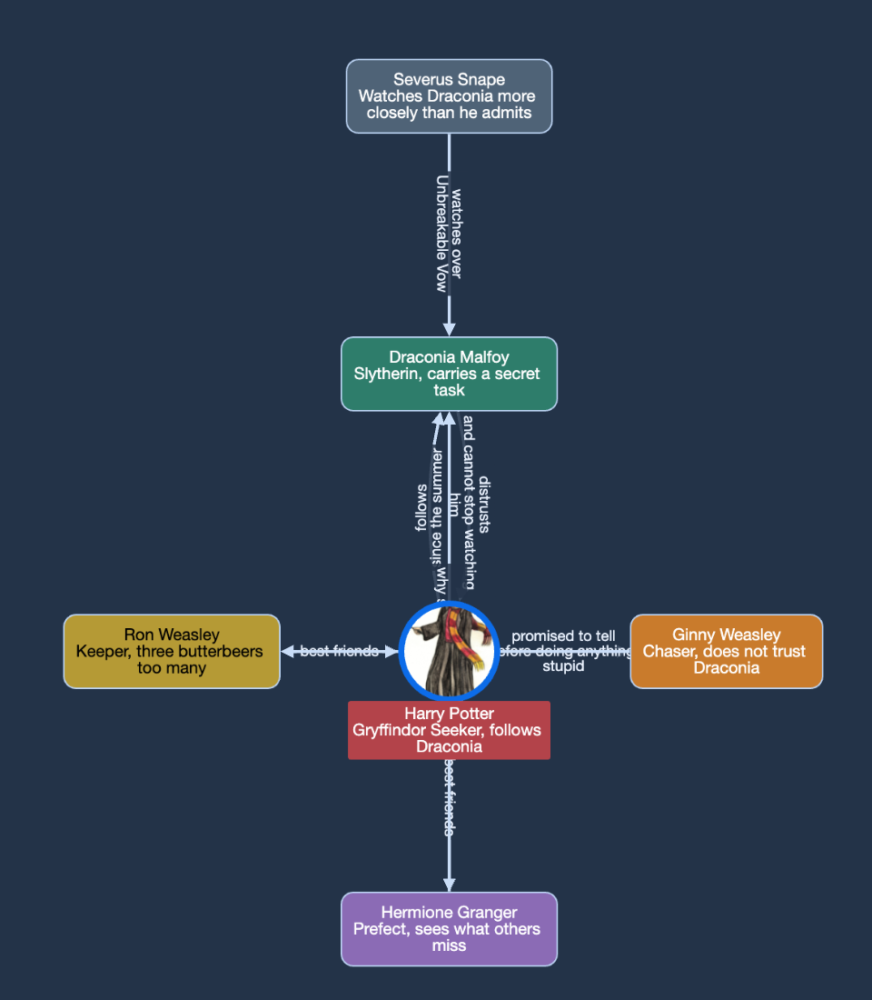

Character Tracker
The cast of your book in the sidebar: a list of characters with a tagline, a note, an icon and a color, the relationships between them, and a map of those relationships.
The Characters tab
The left sidebar of the story editor gets a Characters tab next to Outline. Above the list are two buttons, Add new character and Relationship map.
The wand button between them has the menu item Import lore entries as characters, see
The list is ordered by name. Every character is on its own color and shows its name with the tagline below it in smaller letters (two lines at most). The buttons of a character:
Characters are saved with the book as soon as you change them, so they are included in its backups.

The character dialog
Add new character and the pen open the same dialog:
The fields are applied with Save.

If you press Cancel (or Esc) while there are unsaved changes, including a relationship you filled in but did not add yet, you are asked whether to discard them.

Relationships
When you open an existing character, the dialog also lists its relationships: the ones the character points to (→),
the ones that point to it (←) and the unidirectional ones (↔), each with a name and a tagline. The trash button
deletes a relationship.
To add one, search for the other character, choose the Direction (this character → other, other → this character or both ways), enter a Name (e.g. employs, friends) and optionally a Tagline, and press Add relationship (the button is above these fields). Relationships are saved at once. A new character can get relationships after it has been saved.
Importing characters from the lorebook
If your characters are already in the lorebook, the wand menu creates them for you. Import lore entries as characters opens a dialog with the entries of the book's lorebook and of all its sub lorebooks, sorted by their order. Each shows its name and a checkbox, and an i icon that shows the content of the entry in a popover, for a quick look before you decide; the checkbox in the header of the list checks or clears all of them. Import creates a character with the name of every checked entry (the tagline, note, icon and color stay empty for you to fill in), Close leaves without importing.
Entries are not compared with the characters you already have: importing the same entry twice creates two characters.

The relationship map
Relationship map shows all relationships of the book as a graph. Every character that has a relationship is a circle with its icon (or a box without one) on its color, with its name and tagline; every relationship is an arrow between two characters with its name and tagline. An arrow points at the target; a unidirectional relationship has an arrow at both ends. Characters without relationships are not in the map.

The characters are arranged in rings around one character - at first the one with the most relationships: the characters it is related to are on the first ring, theirs on the second and so on. Double-click a character to arrange the map around it. You can also drag the characters, move the map and zoom with the mouse wheel.
Commands
The characters are also commands, for the command line and for agents. They work on
the book that is open (an agent: on its working copy), and an open Characters tab shows the change at once. A character is
given by its name (the case does not matter), or by its number in /list-characters (the order of the names) when two
characters have the same name. A relationship is given by its number in /list-character-relations. A command that changes a
character takes only the fields you give it; an empty text clears a tagline or a note. The icon can only be set in the
dialog.
Adding and changing is not destructive; only the delete commands are, which an agent may be set to ask you about.
Phone
The tab is in the drawer of the story, next to the outline, like the Author's Note.